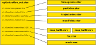

The optimisation set is the central data type in a Relion tomography project, and it only contains paths to other files. It is usually named optimisation_set.star.
Specifically, it can point to the following data files:
All of those entries are optional, and different programs require different inputs. All programs take an optimisation set as input, and most of them also write one out. If a data file is created or updated by a program, it is added to the optimisation set that the program writes out. This frees the user from having to track which programs update which data files. For example, relion_tomo_refine_defocus will only update the tomogram set, because the defoci are only defined once for each tilt image, while relion_tomo_polish will update the tomogram set, the particle set and the trajectory set.
When running a program, the input optimisation set is always specified with the --i argument. In addition, the idividual data files can also be specified separately, in which case the individual files will override the ones listed in the optimisation set. This allows the user to easily perform the same procedure with specific data files exchanged. If all data files required by a program have been specified individually, then an optimisation set is not required at all. The input arguments for the individual data files are always named as follows:
There are 3 ways to create an initial optimisation set: